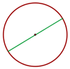
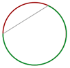
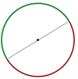
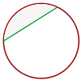

Circunferencia y círculo
Circunferencia
Una circunferencia es una línea curva cerrada cuyos puntos están todos a la misma distancia de un punto fijo llamado centro. 
Centro de la circunferencia: Punto del que equidistan todos los puntos de la circunferencia.
Radio de la circunferencia: Segmento que une el centro de la circunferencia con un punto cualquiera de la misma.
Elementos de la circunferencia
Cuerda
Segmento que une dos puntos de la circunferencia.

Diámetro
Cuerda que pasa por el centro.
Arco
Cada una de las partes en que una cuerda divide a la circunferencia. Se suele asociar a cada cuerda el menor arco que delimita.
Semicircunferencia
Cada uno de los arcos iguales que abarca un diámetro.
Círculo

Es la figura plana comprendida en el interior de una circunferencia.
Elementos de un círculo
Segmento circular
Porción de círculo limitada por una cuerda y el arco correspondiente.
Semicírculo
Porción del círculo limitada por un diámetro y el arco correspondiente. Equivale a la mitad del círculo.

Zona circular
Porción de círculo limitada por dos cuerdas.

Sector circular
Porción de círculo limitada por dos radios.

Corona circular
Porción de círculo limitada por dos círculos concéntricos.
Trapecio circular
Porción de círculo limitada por dos radios y una corona circular.